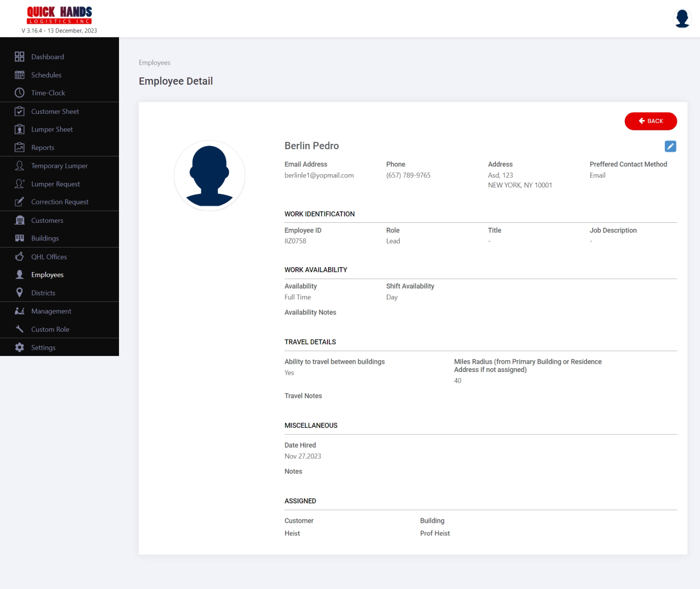
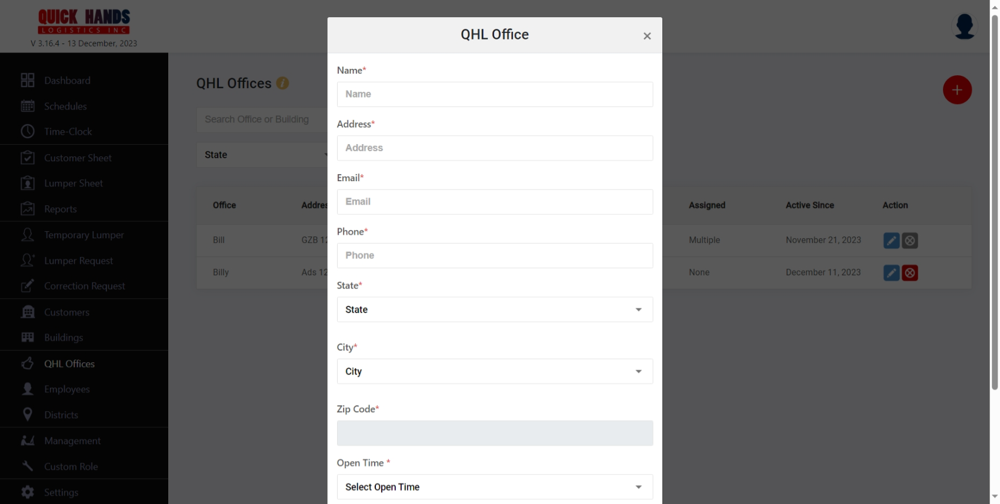

Admin
Onboarding
Sign In
Forgot Password
Reset Password
User Profile
As the admin clicks on the profile icon on the top, detail information related to the logged in user would appear such as user name with associated role, email, and password which can be further viewed and updated.
QHL logo will be visible on the top and then their information will be divided into separate sections in the following manner.
1. Profile
2. Change Email
3. Change Password
4. Logout
Profile
Can view the following information
- Admin's Full Name
- Admin profile image
- The role of the admin
- Associated Email id
Be able to edit the profile information by clicking on the edit button, a pop-up appears with the basic details:
- Profile Image
a. A default profile image appears for the first time.
b. Able to upload the profile image by clicking on the red upload button.
Clicking on upload, opens the folder from where you can select the desired image.
As you have selected the image, the red "change" button activates which lets you change the image (can reselect the same image too)
c. After a profile image is uploaded, can also remove the picture by clicking on the grey delete icon.
d. As we hover over the deletion icon, it shows the help text " Remove profile photo and return to the default icon"
e. Adding a profile image is not a mandaotory field to be filled.
- Information such as First, middle, last name & phone no. are automatically pre-filled.
a. The country code for a phone number is fixed as +1 and should be 10 digits.
b. The minimum and maximum character limits for entering the name would be 1 and 20.
c. Middle name is not a mandaotory field to be filled.
All the updated information including image, name, and phone no. will be updated only when we click on the update button.
A success notification "Employee profiel updated succesfullly" will appear after successfully updating and reverts us back to the landing page of the section.
Change Email
As we click on the edit icon, a pop-up appears with the following information
1. A noneditable feild for the current email.
2. The password
a. Show the current password associated with the account if it is saved on local storage of device.
b. If we try to edit/enter the wrong current password, it gives a validation as "Invalid Password"
c. Update button will remain disable despite entering the new email.
4. Enter the new email and it should match what we are writing on the “Re-Type New Email”.
5. Will prompt the user with validation if:
a. email doesn’t match
b. if the email entered is not of a valid format
6. All of the fields are mandatory to be filled
7. After updating all the information with correct current password, the update button becomes activated and by clicking on it, the changes are saved
8. Admin is logged out of the current login session as he updates his email with a successful notification that the email has been updated and to log in again in order to use the portal.
9. On the new email address, the admin receives a mail with the following body
Hi [Admin’s Full name],
The email associated with your QHL's Admin Dashboard account has been updated.
New Email: ______
Please use this new email address to sign into the QHL's Admin Dashboard.Admin Dashboard
Thanks,
Quick Hands Logistics
Change Password
As we click on the edit icon, a pop-up appears with the following information

1. Enter the current password
2. Enter new password - retype the new password
a. Can type the same password as the current too.
3. The user is prompted with the validations if:
a. The current password is wrong as "Invalid Passowrd"
b. If the passwords don’t match the newly typed password fields as "Password does not match"
c. If the entered password format is wrong as "At least 8 characters that include 1 uppercase, 1 lowercase, 1 special character, 1 number"
4. Update button activates as we type all the information correctly.
5. Success notification as "Password has been changed" appears
6. User is not logged out of the portal.
7. User can also avail the benfit of the forgot password functionality by clicking on the button
a. As we hove rover the button, the text changes to blue
b. Redirects you to the "Forgot Password" screen
Logout
As we clcik on the button, it logs you out and redirects to the login screen with the same dashboard selected.
Settings
As we navigate to settings through the side navigating tab, we are redirected to Settings landing page.
1. Language
a. By default the language selected be english
b. Can translate to spanish or english, will change the the words used in the portal accordingly
2. Time Zone
a Will be automatically fetched based on user's location as soon as he enables it.
3. Time Format
a. Will be able to select from two types of format
b. By default the option selected will be 12 hours
4. Notifications
a. Can enable or disable the mail notifications to be sent to admin
b. Based on his permission, they will be able to recieve mails for two cases
i. When a read requests a lumper
ii. When lead request for a correction
5. Changes will be saved only when you click on the red save button
Customer
As we navigate to customers through side navigating tab, we are redirected to it's landing page.
Landing page
The page start with the title Customers and 'i' button which when clciked, gives you an insight of the section, such as to add / edit customer, make them non active or delete, and view their detail page.
A red + button to add a customer.
- Widgets - For selecting the information specific to their status if they are active, non active or both
- By default the option selected will be "Active and Non Active Customers"
- Can selct more options from the dropdown; Active Customers and Non Active Customers
- Hierarchy is as shown
-
Search
- Placeholder for the search bar is "Select Customer in the Selected Type" with a search icon.
- Based on the filter selected, the data will be only populated for them.
- For example: If you have selected "Non Active Customers" as a filter and type the name of the customers in the search field. If the customer you are searching for belongs to Non Active, they will appear in the table otherwise "No Results Found" will appear.
-
Active Customers
- The number of customers who are active appears on the top of table and the associated data will appear in the table.
- The table consists of followings columns with their title in bold and the information in regular text.
- Customer
- Will show the names of the customers.
- If click on the name, a pop up comes with the following info.
- If we click on the customer name inside the pop up, it will redirect to the their detail page.
- Buildings
- Will show the name of building associated with the customer
- If click on the name, a pop up comes with the following info.
- "Multiple" appears if more than one building is associated with the customer, if we click on it, will open a pop up as shown in the image
- If we click on the building name inside the pop up, it will redirect to the their detail page.
- Managers & Supervisors
- Will show the name of managers,supervisor associated with the customer.
- If click on the name, a pop up comes with the following info.
- "Count" appears if more than one manager is associated with the customer, if we click on it, will open a pop up as shown in the image.
- If we click on the manager name inside the pop up, it will redirect to the the customer detail page.
- Active Since
- Automatically fetches the date when customer was created.
- Format of showing date will be "Full month name Date, Year"
- Action - As we hover over icons, the functionality of them appears in a text form
- Eye Icon button -> Redirects to their detail page
- Edit Icon button -> Opens pop up to edit customer details
- Orange Cross button -> To make a customer non active
- All Contacts and buildings need to be made Non Active before allowing a Customer Profile to become Non Active.
- Error message appears when Non Active (orange x) is clicked on a Customer profile that has an active Building and/or Contact.
- Customer
- Pagination is implemented which lets you choose how many items to display in a table, by default it's set to 10.
-
Non Active Customers
- The number of customers who are non active appears on the top of table and the associated data will appear in the table.
- Hierarcy Order for Non Active Customer is listed by
- Non Active Since date (reverse chronological order; Present - past)
- Customer Name (alphabetical order)
- Same information in tables as for "Active Customers"
- Non Active Since -> Fetches the date when the customer profile was made non active.
- Action
- Green Turn around button -> To reactive the customer
- Red Cross Button -> To delete a customer; can renter the same information for new profile
- Delete the profiles from the Customers and Building sections from the listing
- Delete all its buildings profiles
- Delete all its contacts profiles
- Delete Customer (work) Schedules for future dates (for corresponding buildings).
- Unassigns QHL Employees; DM, Leads, and lumpers (from corresponding buildings).
- Pagination is implemented which lets you choose how many items to display in a table, by default it's set to 10 items per page.
Add Customer
- As we click on the red add button, a pop up appears
- A default profile image appears for the first time.
- Able to upload the profile image by clicking on the red upload button.
- Clicking on upload, opens the folder from where you can select the desired image.
- As you have selected the image, the red "change" button activates which lets you change the image (can reselect the same image too)
- After a profile image is uploaded, can also remove the picture by clicking on the grey delete icon.
- As we hover over the deletion icon, it shows the help text " Remove profile photo and return to the default icon"
- Adding a profile image is not a mandaotory field to be filled.
- Minimum 1 and maximum 50 characters can be added in name field, which accepts alphabets, spaces, numbers and special characters.
- As you enter the name, red button becomes activated.
- Cannot enter space as the first character, if added before a name, would discard the spaces entered.
- If you click on cross button, it shows the pop up to either discard or keep on ediitng.
- If you click on discard, it will revert you back to the landing page
- If you click on continue, it will keep the pop up open
Edit Customer
- As we click on the edit icon, a pop up appears
- A default profile image appears if you haven't uploaded any image.
- Able to upload or change the profile image by clicking on the red upload button.
- Clicking on upload, opens the folder from where you can select the desired image.
- As you have selected the image, the red "change" button activates which lets you change the image (can reselect the same image too)
- After a profile image is uploaded, can also remove the picture by clicking on the grey delete icon.
- As we hover over the deletion icon, it shows the help text " Remove profile photo and return to the default icon"
- Updating a profile image is not a mandaotory field to be filled.
- Minimum 1 and maximum 50 characters can be added in name field, which accepts alphabets, spaces, numbers and special characters.
- As you enter the name, red update button becomes activated.
- Changes are saved when you click on the update button for both image & name.
- Cannot enter space as the first character, if added before a name, would discard the spaces entered.
- If you click on cross button, it shows the pop up to either discard or keep on ediitng.
- If you click on discard, it will revert you back to the landing page
- If you click on continue, it will keep the pop up open
Customer Detail Page
The page start with the title Customers Detail and 'i' button which when clciked, gives you an insight of the section, such as to add/edit contacts, add/edit building, make them non active or delete, and view their detail page.
Customer's name and profile picture appears with an edit button
A red back button to revert to customer landing page.
Widgets
- For selecting the information specific to their status if they are active, non active or both
- By default the option selected will be "Active and Non Active"
- Can select more options from the dropdown; Active and Non Active
Active
-
Contacts tab is the selected tab by default with a search bar and count of how many contacts are there as shown in the image
- Placeholder for the search bar is "Search Contact, Building, Role" with a search icon.
- If the customer, its associated building or a specific role you are searching is there, will be visible in the table otherwise "No Results Found" will appear.
- The number of customers who are active appears on the top of table and the associated data will appear in the table.
- The table consists of followings columns with their title in bold and the information in regular text.
- Name - Full Name of the contact in alphabetical order
- Role - Associated role as manager or supervisor will appear for a contact. Hierarchy Order for Role (Managers, Supervisors)
- Title - Title if you have mentioned any otherwise none will appear
- Buildings / Permissions - Be able to click on view and a pop up appears for the buildings if he is assigned and has permssions otherwise None will appear
- Email - Email associated with the contact will appear
- Phone - Phone no. associated will the contact will appear
- Active Since
- Automatically fetches the date when contact was created.
- Format of showing date will be "Full month name Date, Year"
- Action - As we hover over icons, the functionality of them appears in a text form
- Eye Icon button -> Redirects to their detail page
- Edit Icon button -> Opens pop up to edit customer details
- Orange Cross button -> To make a customer non active. Contacts for following criteria can be made non active
- Contacts only assigned to Non Active buildings
- Contacts who are not assigned to a building.
- Contacts who have permissions to Active buildings but are not the ‘Main Contacts’ (his names appears in the Edit Building page.)
- Send Credentials - You can select the contact for which you want to recieve email for authorization, as per their account setup
-
Buildings tab is the other tab with a search bar and count of how many buildings are there as shown in the image
- Placeholder for the search bar is "Search Building, Contact, QHL Employee" with a search icon.
- Enter the respective name for the information you want to search, its associated data, will be visible in the table otherwise "No Results Found" will appear.
- The number of customers who are active appears on the top of table and the associated data will appear in the rows.
- The table consists of followings columns with their title in bold and the information in regular text.
- Building Name - Full Name of the building
- Managers / Supervisors - Associated role as manager or supervisor will appear for the building
- District Manager - Name of the district manager will be shown, when you click on it, the detail pop up opens which redirects you to their detail page
- Lead - Name of the lead will be shown, when you click on it, the detail pop up opens which redirects you to their detail page
- Lumper - Name of the Lumper will be shown, when you click on it, the detail pop up opens which redirects you to their detail page
- Shift Details - Be able to click on view and a pop up appears for the employees as per the shift
- Active Since
- Automatically fetches the date when contact was created.
- Format of showing date will be "Full month name Date, Year"
- Action - As we hover over icons, the functionality of them appears in a text form
- Eye Icon button -> Redirects to their detail page
- Edit Icon button -> Opens pop up to edit buildings details
- Calendar icon - redirects to the schedule page for the selected building
- Orange Cross button -> To make a building non active
Non Active
- Contacts tab is the selected tab by default with a search bar and count of how many contacts are there as shown in the image
- Placeholder for the search bar is "Search Contact, Building, Role" with a search icon.
- If the customer, its associated building or a specific role you are searching is there, will be visible in the table otherwise "No Results Found" will appear.
- The number of customers who are active appears on the top of table and the associated data will appear in the table.
- The table consists of followings columns with their title in bold and the information in regular text.
- Name - Full Name of the contact
- Role - Associated role as manager or supervisor will appear for a contact
- Title - Title if you have mentioned any otherwise none will appear
- Buildings / Permissions - Be able to click on view and a pop up appears for the buildings if he is assigned and has permssions otherwise None will appear
- Email - Email associated with the contact will appear
- Phone - Phone no. associated will the contact will appear
- Non Active Since
- Automatically fetches the date when contact was made non active.
- Format of showing date will be "Full month name Date, Year".
- Non Active Since date should be listed by reverse chronological order (Present - past)
-
Customer Name (alphabetical order) " - Action - As we hover over icons, the functionality of them appears in a text form - Eye Icon button -> Redirects to their detail page - Edit Icon button -> Opens pop up to edit customer details - Orange Cross button -> To make a customer non active
-
Buildings tab is the other tab with a search bar and count of how many buildings are there as shown in the image
- Placeholder for the search bar is "Search Building, Contact, QHL Employee" with a search icon.
- Enter the respective name for the information you want to search, its associated data, will be visible in the table otherwise "No Results Found" will appear.
- The number of customers who are active appears on the top of table and the associated data will appear in the rows.
- The table consists of followings columns with their title in bold and the information in regular text.
- Building Name - Full Name of the building
- Managers / Supervisors - Associated role as manager or supervisor will appear for the building
- District Manager - Name of the district manager will be shown, when you click on it, the detail pop up opens which redirects you to their detail page
- Lead - Name of the lead will be shown, when you click on it, the detail pop up opens which redirects you to their detail page
- Lumper - Name of the Lumper will be shown, when you click on it, the detail pop up opens which redirects you to their detail page
- Shift Details - Be able to click on view and a pop up appears for the employees as per the shift
-Non Active Since
- Automatically fetches the date when building was made non active.
- Format of showing date will be "Full month name, Date, Year"
- Action - As we hover over icons, the functionality appears in a text form
- Eye Icon button -> Redirects to their detail page
- Edit Icon button -> Opens pop up to edit buildings details
- Green Rotation button -> To make a building active
- Red Deletion button -> To delete a building
Add Contact
- You can view the form with following fields for entering the information in order to add a contact
- First Name - A mandatory field
- Middle Name - not a mandaotory field to be filled.
- Last Name - A mandatory field
- The minimum and maximum character limits for entering the name would be 1 and 20.
- Email - A mandatory field, will throw an error when the email entered is not of a proper format.
- Phone No. - A mandatory 10 digit field, can copy paste a phone no. too.
- Role - Select a role from managers or supervisors
- Title - Enter the title respective to the contact you are creating, of minimum 20 characters
- Shift - A mandatory field to select a shift from all, day, swing and night in the mentioned order
- Department - not a mandaotory field to be filled, by default operations department will be selected.
- Administrative Permissions
- Clicking on the eidt icon will open section to remove or add permission for a building
- Can give a contact the permission to either view building details, create schedules or do both for them by clicking on add radio button and selecting the buiding for which you want
- Can remove the permission to either view building details, create schedules or both for them by clicking on remove radio button and selecting the buiding for which you want
- View current permission - clicking on the button will open a pop up with the buildings and associated permissions
- When we are creating a contact for the first time
- If there is no building, then after abuilding has been created, by default their adminstartive permissions are updated to view buildings and create schedules for them
- If a building already exists, we have to give the adminstartive permissions to the contact
- Here is the associated email format, when permissions are given or updated
- Clicking on the eidt icon will open section to remove or add permission for a building
Hi [Contact Name],
The administrative permissions associated with your QHL's Customer Dashboard account have been updated.
New Permissions:
View Buildings/Contacts/QHL Employee ID: No
Create Work Schedules: No
Thanks,
Quick Hands Logistics
Edit Contact
- All the information for the contact are presaved and appears in the field. As you click on the field, you can edit the text as shown in image
- The update button remians activated even when no changes have been made, clciking on the button, will redirect you to contacts listing with a success notification
Add Building
Clicking on the add building button, will redirect you to the section to add building details as shown in the image.
- The fields associated while entering the details are as followed
- Customer
- To select the name of the customer from the dropdown, all active contacts appear in the dropdown
- A mandtory field
- Building Name / Identification
- Enter the building name you want to associate with a customer
- Minimum 1 and maximum 20 characters are allowed including, space and numbers as well.
- Can be same as previous
- A mandatory field
- Building Phone
- Enter the phone number directly or through pasting
- The country code for a phone number is fixed as +1 and the number should be 10 digits.
- A mandatory and unique field
- Building Address
- Maximum 1 and minimmum 50 characters are allowed which includes space, numbers and symbols
- A mandatory field
- Zipcode, State & City
- Minimum 4 & 5 digits of zipcode can be entered
- As you enter the correct zipcode, the stae & city associated will be prefilled in their respective fields
- If the zipcode entered is incorrect, it will throw you an error that zipcode doesn't match with our records
- A mandatory field
- Manager / Supervisor
- Once you clcik on the select, the list of assocated contacts with the customers appears
- You can click on the add new button, to add a contact
- As you have select the add new button, it open the pop up with role automatically selected depending from where you have selected the option
- A mandatory field
- District Manager
- You can select multiple DM's from the list
- You cannot select a DM or DM will not appear unless you add a zipcode
- DM are appeared in the list when you have added them for the districts
- If you haven't added any DM associated witht he zipcode you are entering for the building, no DM will appear in the dropdown
- A mandtory field
- QHL Office
- All the saved QHL office will appear in the dropdown
- A mandtory field
- Shift detail - As you select a shift, the section expands to save the shift details, which includes
- [Shift Name] Time - Select from the dropdown the start & end time which ranges from 12am to 11:30pm
- Department
- Operations will be selected by default
- If you select Receiving / shipping as department, lead & lumpers will be separately selected for each department receiving & shipping
- QHL Lead - Click on the add button, you can search by lead name, and as you increase the distance filter the leads name will start appearing
- QHL Lumpers - Click on the add button, you can search by lumper name, and as you increase the distance filter the lumpers name will start appearing
- If no results are found, a message is displayed
- A mandatory field
- You can select multiple (all three shifts) or one, depending upon the shifts selected the detail section to include leads & lumpers will appear.
- Empty Container Report - you can choose whom to send reports when the containers for a schedule are completed as per customize format and the mail frequency
- By default no will be selected and and when yes is selected, the section expands to set the frequency of email
- When yes is selected, you can select the contact from the dropdown for which you choose to send the reports
- As you click on the customize email subject and message, a pop up opens which lets you edit the saved draft of subject and message body
- You can select the document type to be sent with email from pdf, excel or both
- You can set the frequency as per the day you want to recieve emails. You can either select the work date or can customize the day you want to recieve emails
- By default, 'Monday - Friday' will be selected.
- As you click on the edit button, a pop up opens which lets you choose from options as selecting specific days and how many weeks. Week period includes options from 1 - 4
- You can either select the monthly option, and set the frequency as per the days and the frequency between months. Monthly interval period would range from 1 - 12. Days for the month will have option from all 1st - 31th.
- By default no will be selected and and when yes is selected, the section expands to set the frequency of email
- Containers Parameter
- Deafult container parameters are only 4: Door, Container Number, Cases, Items/Sort
- Can add additonal container parameters by clicking on the add icon as shown in the image

- The additional container parameter are listed in alphabetical order in both pop up and after selection
- Can also add a custom parameters, if adding multiple need to separte them with commas
- Clicking on the add custom parameter field, will save the parameters and they will appear with a checkbox in the pop up, select and save them in order to add the parameters
- Click on the add building button, information is saved and after a success notification, it redirects you to the buildings listing
Buildings
As we navigate to buildings through side navigating tab, we are redirected to it's landing page.
Landing page
The page start with the title buildings and 'i' button which when clciked, gives you an insight of the section, such as to add / edit building and view their detail page.
A red + button to add a building.
- Customer
- As you enter the name or first alphabet associated with the name, the dropdown is visible with the names that have the same word as you entered.
- Search
- Placeholder for the search bar is "Search by building name" with a search icon.
- Based on the information, the data will be only populated for them.
- If no data is found, will show "No Results found"
-
State and City
- As you select a state, then the city filter gets activated and you can select
- Based on the state selected, the city will be populated
- Based on the information selected, the data will be only populated for them.
- If no data is found, will show "No Results found"
-
Active Buildings
- Beside the title, the counter is also displayed for the number of buildings that are active
- The table would have following columns
- Building - will include the building name
- Customer - Will have the associated customers name
- City / State - Associated with the buildings
- Managers / Supervisors - Contact who are associated with the buildings
- Leads / Lumpers - Employees (Leads & Lumpers) who are associated with the buildings
- Shift Details - As we click on the pop up, the employees who are associated with the building will appear
- "Count" appears if more than one contact is associated with the customer, if we click on it, will open a pop up as shown in the image.
- As we click on the names, a pop up opens with the personal details and as we clcik on it, it redirects to their detail page
- Pagination is implemented which lets you choose how many items to display in a table, by default it's set to 10.
Add Building
Edit Building
- All the information for the building are presaved and appears in the field. As you click on the field, you can edit the text as shown in image.

- The update button remians activated even when no changes have been made, clicking on the button, will redirect you to buildings listing with a success notification.
Building Detail Page
The buildings details can be viewed by clciking on the eye icon as shown in the image. . A back button which redirects you to the listingof buildings. An edit icon which lets you edit building details.
- The building name appears on the top of the page with the address including state, city and zipcode.
- Associated phone no. for the building appears under the building phone title
- Customer name appears under the Customer title for the associated building
- Created By - Full name of the person who created the building appears on the page, can be a DM or Admin
- Created On - Automatically fetches the day it was created.
- Customer Contact - This section displays information with respect to the contact and their permissions
- If only one person is there as manager/supervisor then their name appears. Clicking on the name would open a pop up and then clicking on the name would redirect you to detail page.
- If more than one person is associated with the building multilpe appears. Clicking on the multiple would open the pop up which will show all the names of the contacts with their details
- Adminstarive Permissions
- Clicking on the multiple will open the permissions pop up associated with the contacts selected for the building
- District Manager - Name of the associated QHL DM will appear under the section
- Admin Office - Name of the associated QHL Office will appear under the section
- Shift detail - The associated shift details will appear under shift time and day
- If multiple shifts are selected, they will appear in the detail page with their time and team details as shown in image with lead and lumpers personal details
- If the department selected is recieving/shipping then their team details would appear separateley
- Empty Container Report
- If the email report is selected as no, then the expanded section would not appear
- If the email report is selected as yes, then the expanded section would appear with following information
- Email Recipient will have name of the conatct you have you have selected who would recieve the email with the document
- Email Subject and Message - Clicking on the view button, would open the pop up that which contains the email subject and email body.
- Document Type - Would show the type you have chosen
- Repeat - Will show the frequency you have selected for sending the email with starting date and email specific time
- Conatiner Parameters
- Parameters - All the associated paarmeters will appear in alphabetical order
- Default parameters will appear in the same order as during adding
Employees
As we navigate to employees through side navigating tab, we are redirected to it's landing page.
Landing page
The page start with the title employees and 'i' button which when clciked, gives you an insight of the section, such as to add / edit employee and view their detail page.
A red + button to add a employees.
-
Widgets
- Active and Non Active Employees
- For selecting the information specific to their status if they are active, non active or both
- By default the option selected will be "Active and Non Active Employees"
- Can select more options from the dropdown; Active Employees and Non Active Employees
- Based on the filter selcted, only those employees will appear or else will show "No Results Found".
- Role
- Have three type of employees roles that appear in the dropdown, can revert to the role
- Based on the filter selcted, only those employees will appear or else will show "No Results Found".
- Assigned
- All Building name appears in the dropdown
- You can select a none option to see who are the employees who are not assigned to any building
- State / City
- As you select a state, then the city filter gets activated and you can select
- Based on the state selected, the city will be populated
- Based on the information selected, the data will be only populated for them.
- If no data is found, will show "No Results found"
- Active and Non Active Employees
-
Search
- Customers
- Placeholder for the search bar is "Customer". As you type the repective associated name will start appearing the dropdown.
- Based on the filters selected, data will be populated for them
- All Buildings
- Placeholder for the search bar is "All Buildings". As you type the repective associated name will start appearing the dropdown.
- Based on the filters selected, data will be populated for them
- Employees
- Placeholder for the search bar is "Search Employees in the Selected Type" with a search icon.
- Based on the filter selected, the data will be only populated for them.
- For example: If you have selected "Non Active Employees" as a filter and type the employee anme in the search field. If it belongs to Non Active, they will appear in the table otherwise "No Results Found" will appear.
- Customers
-
Active Employees
- The number of employees who are active appears on the top of table and the associated data will appear in the table.
- The table consists of followings columns with their title in bold and the information in regular text.
- Name
- Will show the names of the employees.
- If click on the name, a pop up comes with the following info.
- If we click on the employee name inside the pop up, it will redirect to the their detail page.
- Assigned
- Will show the name of building associated with the employee
- If click on the name, a pop up comes with the following info.
- "Multiple" appears if more than one building is associated with the employee, if we click on it, will open a pop up.
- If we click on the building name inside the pop up, it will redirect to the their detail page.
- ID - Unique ID associated with employee will appear
- Phone - Unique phone number associated with employee will appear
- Email - Unique email associated with employee will appear
- Residence - State and city with respect to the building address will appear
- Active Since
- Automatically fetches the date when employee was created.
- Format of showing date will be "Full month name, Date, Year"
- Action - As we hover over icons, the functionality of them appears in a text form
- Eye Icon button -> Redirects to their detail page
- Edit Icon button -> Opens pop up to edit customer details
- Orange Cross button -> To make a employee non active
- Employees need to be unassigned in order to make them Non Active.
- Error message appears when Non Active (orange x) is clicked for employee that is assinged to a building
- Send credentials button appears for DM and Lead profile, an email is send with respect to their status if the employee has already verify email and set-up a password.
- If employee has NOT verified email and set-up a password, then send Email Verification and Password Set-Up
- If employee verify email but has not set-up a password, then send 'Set Password' email
- If a employee has already verified email and set-up a password, then send a 'Reset Password' email
- When clciked on ID button, ID pop uos gets open up which can be further generated
- Name
- Pagination is implemented which lets you choose how many items to display in a table, by default it's set to 10.
-
Non Active Employees
- The number of employees who are non active appears on the top of table and the associated data will appear in the table.
- Hierarcy Order for Non Active Customer is listed by
- Non Active Since date (reverse chronological order; Present - past)
- Customer Name (alphabetical order)
- Same information in tables as for "Active Employees"
- Non Active Since -> Fetches the date when the customer profile was made non active.
- Action
- Green Turn around button -> To make the employee active
- Red Cross Button -> To delete a employee; can renter the same information for new profile
- Pagination is implemented which lets you choose how many items to display in a table, by default it's set to 10 items per page.
Add Employee
- You can view the form with following fields for entering the information in order to add an employee.
- First Name - A mandatory field
- Middle Name - not a mandaotory field to be filled.
- Last Name - A mandatory field
- The minimum and maximum character limits for entering the name would be 1 and 20.
- Email - A mandatory unique field, will throw an error when the email entered is not of a proper format.
- Phone No. - A mandatory 10 digit unique field, can copy paste a phone no. too.
- Address - Residential address of the employee. Maximum 1 and minimmum 50 characters are allowed which includes space, numbers and symbols
- A mandatory field
- Zipcode, State & City
- Minimum 4 & 5 digits of zipcode can be entered
- As you enter the correct zipcode, the stae & city associated will be prefilled in their respective fields
- If the zipcode entered is incorrect, it will throw you an error that zipcode doesn't match with our records. Foe eg: 07041 is consideered as an icorrect zipcode
- A mandatory field
- Preferred Contact Method
- You can select your preferable mode from phone (as text message), through email or both in order to recieve updates
- By default, email will be selected
- Work Identification -
- Employee ID - A unique 6 digit employee ID will be generated for every employee. A mandatory field
- Role - Can select a role from District Manager, Lead and Lumper. A mandatory field
- Title - Enter the title respective to the employee you are creating, of minimum 20 characters.
- Job Description - You can create a detail description rekated to the role you have selected.
- Work Availability
- Availability
- By default, full time will be selected by default.
- Can select from either full time or part time
- Shift Availability
- By default, day will be selected as the default shift
- A mandatory field to select a shift from all, day, swing and night in the mentioned order
- Can onlly select only one field
- Availability Notes
- Can create a detail description rekated to the role you have selected.
- Availability
- Travel Details
- Ability to travel between buildings
- By default, no would be selected by default
- If you have selected no and yes, then based on the selection, they will appear in the building and for the requests for a lumper or assigned them as temporary
- Miles Radius from primary building / Residence
- If yes has been selected, you can enter the miles upto 60
- It is used when we want to filter the emoloyees based on their distance while adding to the building
- Travel Notes
- Can create a detail description related drom the travel perspective you have selected
- Ability to travel between buildings
- Miscellaneous
- Date Hired - Can selct from previous and today's date
- Notes - Can create a detail description related to the employee profile you have selected
- As you click on add, the changes are saved and redirects you to the listing page.
- Based on the role you have selected, you'll recive following emails of information regarding your account creation and setup.
- Here is the associated email format, when DM profile is created
"Hi [DM's First Name],
Congratulations. Your QHL account has been created.
Click here to verify email and create a password
*Link expires in 48 hours.
After you set-up your password, you'll be able to sign into the QHL's Admin Dashboard to see information for your buildings.
(Admin Portal website link will be place here as a hyperlink).
Please contact your QHL Office, if you have any questions or need help.
Thanks,
Quick Hands Logistics"
- Here is the associated email format, when Lead profile is created
"Hi [Lead's First Name],
Congratulations. Your QHL account has been created.
Click here to activate your account and set a password
*Link expires in 48 hours.
After you activate your account , you'll be able to sign into the QHL's mobile app to manage work information for your QHL team.
Please contact your QHL District Manager, if you have any questions or need help.
Thanks,
Quick Hands Logistics"
- Here is the associated email format, when Lumper profile is created
"From: QHL Support
Subject: Account Created
----
Hello [Lumper's first Name],
Your account with QHL has been created. You will be receiving work notifications by [Prefered Contact Method]. Speak with your QHL District Manager if you would like to change to a different method.
Thanks,
Quick Hands Logistics"
- Here is the associated email format, when employee profile is created
"
From: QHL Support
Subject: Account Updated
----
Hello [Employee's first Name],
Your account has been updated.
Updated [Role/Phone/Email/Address]:
Thanks,
Quick Hands Logistics"
Edit Employee
- All the information for the employee are presaved and appears in the field. As you click on the field, you can edit the text as shown in image.
- The update button remians disabled even when no changes have been made, clicking on the button, will redirect you to employees listing with a success notification.
- Email are sent across when the following are updated
- Email, Role, Phone, Email and address are changed
- Here is the associated email format, when employee profile is created
"
From: QHL Support
Subject: Account Updated
----
Hello [Employee's first Name],
Your account has been updated.
Updated [Role/Phone/Email/Address]:
Thanks,
Quick Hands Logistics"
Employee Detail Page
The employee details can be viewed by clciking on the eye icon as shown in the image. A back button which redirects you to the listing of buildings. An edit icon which lets you edit building details.
- The employee name appears on the top of the page with the email address, phone, resendential address (including state, city and zipcode) and preffered contact Method
- Work Identification
- Unique employee ID will appear
- Role selected will appear
- If Title and description have information, their information will appear otherwise it would be blank
- Work Availability
- Availability - The availability selected will appear
- Shift Availability - The shift selected will appear
- If Availability notes have information, then it will appear otherwise it would be blank
- Travel Details
- Ability to travel between buildings - the option you have selected will appear
- If you have selected no, the the blank information will appear for the rest of the fields
- If you have selected yes, the respectiv einformation will appear for Miles radius and travel notes
- Miscellaneous
- Date hired & notes will appear in the this section
- Assigned
- Customer and building details for whom the employee is assigned to.
QHL Office
As we navigate to QHL Office through side navigating tab, we are redirected to it's landing page.
Landing page
The page start with the title QHL Office and 'i' button which when clciked, gives you an insight of the section.
A red + button to add a QHL Office.
-
Widgets
- State / City
- As you select a state, then the city filter gets activated and you can select
- Based on the state selected, the city will be populated
- Based on the information selected, the data will be only populated for them.
- If no data is found, will show "No Results found"
- State / City
-
Search - A single search bar which throws result for the below two functions. Placeholder for the search bar is "Seacrh Office or Building" with a search icon.
- Office
- As you type the repective associated office name, information will start appearing in the table.
- Search function overwrites the filters.
- All Buildings
- As you type the repective associated information regarding the entered building name will start appearing in the table.
- Search function overwrites the filters.
- Office
- The table consists of followings columns with their title in bold and the information in regular text.
- Name
- Will show the names of the QHL Office.
- Minimum and maximm character limit are 1 and 20.
- Address - Residential address of the employee. Maximum 1 and minimmum 50 characters are allowed which includes space, numbers and symbols
- Hours - Open and close hours will appear within the range
- Email - A mandatory unique field, will throw an error when the email entered is not of a proper format.
- Phone No. - A mandatory 10 digit field, can copy paste a phone no. too.
- Assigned
- Will show the name of building associated with the qhl office
- If click on the name, a pop up comes with the information about buildings
- "Multiple" appears if more than one building is associated with the employee, if we click on it, will open a pop up as shown int he image
- If we click on the building name inside the pop up, it will redirect to the their detail page.
- Active Since
- Automatically fetches the date when QHL Office was created.
- Format of showing date will be "Full month name, Date, Year"
- Action - As we hover over icons, the functionality of them appears in a text form
- Edit Icon button -> Opens pop up to edit customer details
- Red Cross button
- To delete a qhl office
- The delete button is disabled when a qhl office is assigned to a building
- Name
- Pagination is implemented which lets you choose how many items to display in a table, by default it's set to 10 items per page.
Add QHL Office
- You can view the form with following mandotory fields for entering the information in order to add a QHL Office.
- Name
- The minimum and maximum character limits for entering the name would be 1 and 20.
- Address - Residential address of the office. Maximum 1 and minimmum 50 characters are allowed which includes space, numbers and symbols
- Email - A field, will throw an error when the email entered is not of a proper format.
- Phone No. - A 10 digit field, can copy paste a phone no. too.
- State, City and Zipcode
- As you enter the state and city, the associated zipcode will be prefilled in its respective field.
- Open Time and Close Time
- The dropdown in close time appears witht he filtered time range as per your selection in open time
- Name
Edit QHL Office
- All the information for the QHL Office are presaved and appears in the field. As you click on the field, you can edit the text as shown in image.
- The update button remians enabled even when no changes have been made, clicking on the update office button, will redirect you to qhl office listing with a success notification.
Districts
Landing page
The page start with the title Districts and 'i' button which when clciked, gives you an insight of the section, such as to add / edit a dsitrict and take actions.
A red + button to add a district.

-
Widgets
- Active and Non Active Districts
- For selecting the information specific to their status if they are active, non active or both
- By default the option selected will be "Active and Non Active Districts"
- Can select more options from the dropdown; Active Districts and Non Active Districts
- Based on the filter selcted, only those Districts will appear or else will show "No Results Found".
- State / City
- As you select a state, then the city filter gets activated and you can select
- Based on the state selected, the city will be populated
- Based on the information selected, the data will be only populated for them.
- If no data is found, will show "No Results found"
- Active and Non Active Districts
-
Search - A single search bar which throws result for the below three functions. Placeholder for the search bar is "Seacrh by State, City or District Manager" with a search icon.
- State or city
- As you type the state or city, information will start appearing in the table.
- Search function overwrites the filters.
- District Manager
- As you type the DM name, information will start appearing in the table.
- Search function overwrites the filters.
- State or city
-
Active Districts - The table consists of followings columns with their title in bold and the information in regular text.
- State - Name of the state
- City - Name of the city
- District Manager - Name of the district managers who are assigned to the ditrict
- Action
- Edit Icon button -> Opens pop up to edit district
- Orange Cross button -> To make a district non active
- Red cross icon - To delete a district
- Edit Icon button -> Opens pop up to edit district
- Pagination is implemented which lets you choose how many items to display in a table, by default it's set to 10 items per page.
-
Non Active Districts - The table consists of followings columns with their title in bold and the information in regular text.
- State - Name of the state
- City - Name of the city
- District Manager - Name of the district managers who are assigned to the ditrict
- Action
- Green round button -> To make a district active
- Pagination is implemented which lets you choose how many items to display in a table, by default it's set to 10 items per page.
Add Districts
By clciking on the button, you will be redirected to the pop up as shown in the image.
- Once you select a state, city field will start to appear.
- For selcting a District Manager, name of the employee whose role is DM will start appearing
- You can selct one or multiple from the dropwdown and click okay
- If the district already exist it will throw an error to use Edit action.
- Click on add will add the districts and redirect you to listing page
Edit Districts
- All the information for the districts are presaved and appears in the field. As you click on the field, you can edit based on the following circumstances
- If a district (State or City) to be edited has a DM assigned to a building in the current district
- State and City fields are rrey- out and disable.
- when State or City fields are clicked, have a popup message appear "Cannot Edit District. A DM is assigned to a building."
- DM cannot be unchecked (unassigned) from a district if he is assigned to a building in the current district.
- DM field is Grey- out and disable check-mark
- When check-mark is clicked, have popup message appear. "Cannot unassigned DM. DM is assigned to a building in this District."
- If a district (State or City) to be edited has a DM assigned to a building in the current district
- Update button remains disbale until a information has been edited "
- The update button remians enabled even when no changes have been made, clicking on the update office button, will redirect you to qhl office listing with a success notification.
Dashboard
bc
ad